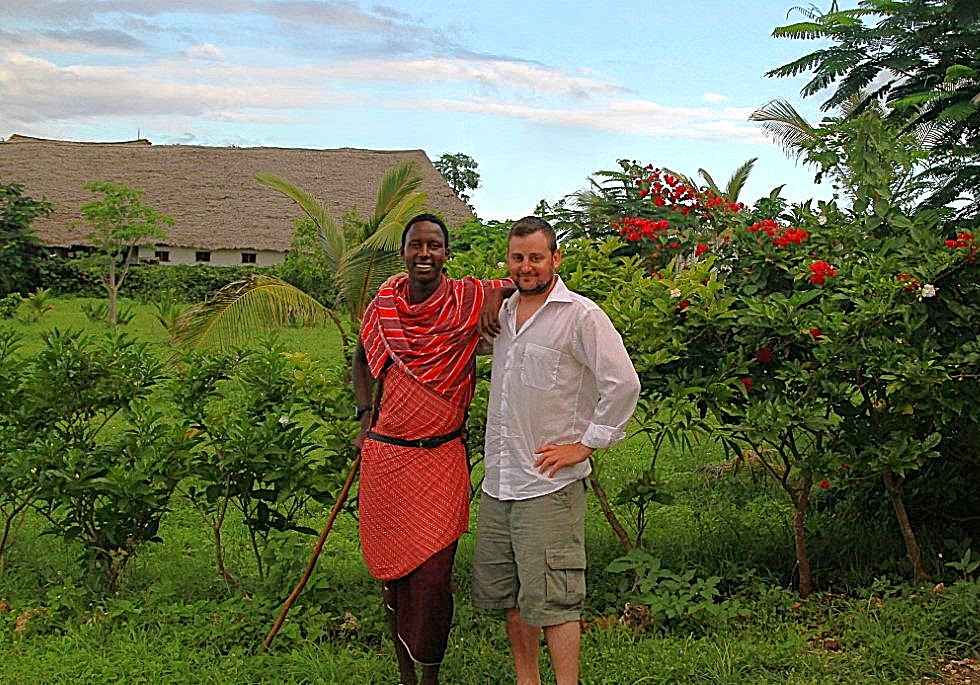

Get to know me
My Biography
The story behind who I am, where I'm from, and where I'm headed.

My Story
Hello, I'm Mike Miller
I am a Digital Forensics IT student with a passion for the technology that makes a positive difference in the world. I was born and raised in Massachusetts, I grew up as an avid nature lover and have enjoyed traveling the world. I grew up when the internet was just starting out and have seen how technology has grown and re-shaped the world we live in; by the simple apps we use daily to systems powering entire industries.
Currently, I'm finishing my degree at UMass Boston where I have immersed myself in learning the basics and intermediate of coding, scripting, data structures, web development, digital forensics, and project management as it applies to IT teams. My academic journey has been one of constant growth, curiosity, and hands-on problem solving, as has my life before the classroom.
Outside the classroom, I started my education after high school by joining the US Marines and traveling the world. I am someone who believes the best developers are also well-rounded humans. I love traveling, experiencing different cultures, and finding inspiration in the world beyond the screen. Those experiences feed directly into how I think, design, and build.
My goal is to work at the intersection of tech and humanity in AI Governance and Compliance and hopefully have a meaningful impact; whether that's contributing to a forward-thinking tech company, collaborating on some open-source projects, or assisting in the creation of products that genuinely help people.
At a Glance
Quick Facts
Education
UMass Boston
Digital Forensics degree in Information Technology
Expected Graduation: 2026
Location
Boston, Mass
Open to relocation & remote opportunities
Focus Areas
Digital Forensics
Cybersecurity
AI Governance and Compliance
Interests
Travel & Culture
Tech & Innovation
My Journey
A Timeline
Graduate High School & join the U.S. Marines
After high school I joined the U.S. Marine Corps Reserve and moved to Boston; which began some exciting chapters in my life.
6 Major Deployments as a U.S. Marine
Although I already had some international travel myself and a few other shorter training exercises with the Marines, this was the beginning of some of my major Marine tours overseas after 9/11 occurred. I participated in a bilateral training mission to Central & South America, visiting about a dozen countries and working together with our host nations' military forces; 1 deployment to Okinawa, Japan; 2 tours in Iraq; 1 tour in Afghanistan; and 1 tour in The Hashemite Kingdom of Jordan. I enjoyed experiencing the food and gaining new perspectives on these countries and their culture and humanity's global connectivity.
End of my Military Service & moving to Jordan
When my US Marine service ended, I moved to Jordan and started my own company doing logistics for US Government contracts and doing my best to continue to build positive relationships with people of different cultures and beliefs. I saw firsthand how technology could improve people's lives and increase the speed business and logistics can be managed globally.
Returned Home From Jordan, COVID, & Starting my IT Education
I returned home from Jordan, then a few months later COVID hit and the world went into lockdown. After COVID I took advantage of some tech training for veterans and also returned to college/university to continue my IT education.
Present Day 🚀
Continuing to grow, exploring and learning new technologies, and looking for opportunities to make a real impact. The journey continues!